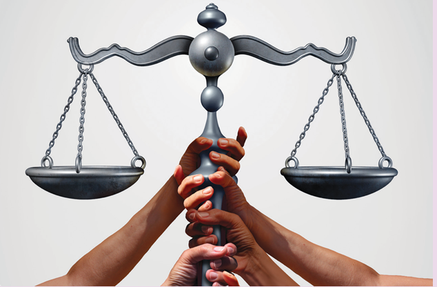
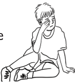
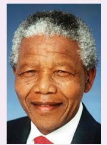
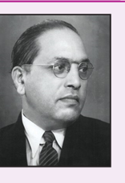
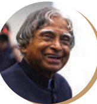
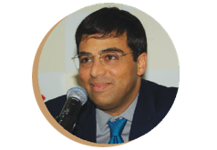
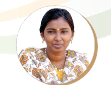
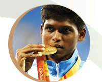

![The image shows constitution of India. constitution of India says we the people of India having solemnly resolved to constitute India into sovereign democratic republic and to secure to all its citizens. Justice social, economical, belief and worship. equality of status and of opportunity and to promote among them all. fraternity assuring the dignity of the individual and the unity of nation. in our constituent assembly this 26th day of November 1949 do hereby adopt, enact and give to ourselves this constitution.](images/image-355.png)

Know the meanings of prejudice and stereotypes
Understand discrimination and inequality
Become aware of the negative consequences of discrimination
The society that we live in comprises people from various social groups who are different in many ways. Since we believe in ‘Unity in Diversity’, we should have been living peacefully with one another irrespective of those differences. Often, we see that diversity is not accepted, and people show attitudes of hostility towards those who are ‘different’ from them. They form opinions about the other groups and this often leads to tension in the society. Such ‘opinions’ are often ‘prejudiced’.
Prejudice means to judge other people in a negative or inferior manner, without knowing much about them. It happens when people have false belief and ideas.
Prejudice means Pre plus Judge
The word ‘prejudice’ refers to prejudgement. Prejudices can be based on many things like people’s religious beliefs, the region they come from, the colour of their skin, language, their accent or the clothes they wear. The types of prejudice are gender prejudice, racial prejudice, class prejudice, disability prejudice and so on.
For example, urban people are more civilised than rural people in attitudes and behaviour, is one such prejudice.
Some common social factors that contribute to the rise of prejudice are
1. Socialization
2. Conforming behaviours
3. Economic benefits
4. Authoritarian personality
5. Ethno–centrism
6. Group closure
7. Conflicts
When prejudice gets stronger, it develops into a stereotype. Stereotype is a false view or idea about something. For example, girls are not good at sports. Stereotype is learned at a very early age, and children grow to have very strong ideas or opinions about things, groups or ideologies. As children grow up, the lines of like and hate for other things, people, cultures, beliefs, languages become sharper.
Example
Ragu was hit in his eye with a soft ball and to everyone’s surprise, he started to cry. The others started to laugh at him; Mani felt sad for him but started laughing along with others.

In the above example, we have a general opinion that girls cry and boys don’t cry. When Ragu cried out of pain, others laughed at him. Now we understand that when we fix people in our image, we create a stereotype.
Gender-based stereotypes are often portrayed in films, advertisements and TV serials. Almost all the advertisements related to detergents, washing machines, dishwashers and others show a woman as the main lead or user of that product. On the other hand, all the stunts shown in a bike advertisement is performed by ferocious looking men.
Inequality means difference in treatment. The different forms of inequalities such as caste inequality, religious inequality, race inequality or gender inequality give rise to discrimination.
Discrimination can be defined as negative actions towards people. Inequality and untouchability are caused by discriminations based on caste, religion and gender. Treating dark-skinned people differently from fair-skinned people, and denying equal status, rights and opportunities on the basis of colour, caste, gender, religion etc. are the formidable discriminatory trends afflicting India.
Article 15(1) of the Constitution states that the State shall not discriminate against any citizen on grounds of religion, race, caste, sex, place of birth.
Do you know
End of Apartheid

After 27 years in prison-former south African president Nelson Mandela, was freed in 1990 and successfully achieved the end of apartheid in South Africa, bringing peace to a racially divided country and leading the fight for human rights around the world.
Do you know
Doctor. B.R. Ambedkar

•He is popularly known as Baba Saheb.
•He was an Indian jurist, economist, politician and social reformer.
•He earned his M.A. in 1915 and then obtained a D. S c at the London School of Economics before being awarded P h. D by Columbia University in 1927.
•He served as the chairman of drafting committee of the constituent assembly and hence regarded as the father of Indian Constitution.
•He was independent India’s first Law Minister.
•He was posthumously awarded the Bharat Ratna in 1990.
Caste system is the most dominant reason for inequality and discrimination in India. The caste system originated in the Varna system of the Vedic Aryan society. In the beginning Varna was an occupation based flexible social division. In the Later Vedic Society, the Varna system was expanded into a rigid, discriminatory, birth based graded caste divisions.
Many people in India have fought against caste oppression. The most prominent among them was Doctor. B.R. Ambedkar. He belonged to a such depressed family and suffered discrimination throughout his childhood. He fought actively for the annihilation of caste so as to ensure equality among all the citizens of India.
Gender discrimination refers to health, education, economic and political inequalities between men and women. For example, A girl is not allowed to go to college after finishing her schooling. Similarly, most of the girls are not allowed to select a career of their choice rather they are forced into marriage. In some families, girls are not allowed to wear modern dresses while boys in such families often wear modern dresses.
Religious discrimination is unequal treatment of an individual or group based on their beliefs. Religious discrimination has been around for a long time. There have been problems between people of different religions for thousands of years. Our Constitution has provided equality for all irrespective of their caste, religion, language, place of birth etc. Yet discriminations are still in practice even in worship places on the basis of caste, religion, gender and language. Our great social thinkers have been crusading against such discriminations and inequalities.
High |
Low |
||||
Serial Number. |
District Name |
Percentage |
Serial Number. |
District Name |
Percentage |
1 |
Kanyakumari |
92.14% |
1 |
Dharmapuri |
64.71% |
2 |
Chennai |
90.33% |
2 |
Ariyalur |
71.99% |
3 |
Thoothukkudi |
86.52% |
3 |
Villupuram |
72.08% |
4 |
The Nilgiris |
85.65% |
4 |
Krishnagiri |
72.41% |
Literacy rate – 2011 Census
Source: Censusindia.gov.in>tamilnadu
Sex Ratio – 2011 Census Number of females per one thousand males
High |
Low |
||||
Serial Number. |
District Name |
Sex Ratio |
Serial Number. |
District Name |
Sex Ratio |
1 |
The Nilgiris |
1041 |
1 |
Dharmapuri |
946 |
2 |
Thanjavur |
1031 |
2 |
Salem |
954 |
3 |
Nagapattinam |
1025 |
3 |
Krishnagiri |
956 |
4 |
Thoothukkudi, Tirunelveli |
1024 |
4 |
Ramanathapuram |
977 |
Source: Censusindia.gov.in>tamilnadu
In the socio-economic field, the benefits of growth have not been spread evenly. The low-income districts are associated with low industrial development, low agricultural productivity and low human development. Similarly, the Districts with low literacy rate are found to be with lower sex ratio.
The remedial measures for abolishing inequality and discrimination in Indian society are as follows.
1. Wider access to quality basic services like healthcare and education for all.
2. Be aware of current gender bias.
3. Make women more visible in public life and institution to eradicate gender disparity.
4. Be open to learning about other religions.
5. Promoting community dining in the classroom may help the students to sit together without any bias of caste, religion or gender.
6. Socialise with people of all types outside home.
7. Effective implementation of laws.
ACHIEVERS
Dr. APJ ABDUL KALAM (1931-2015)

Avul Pakir Jainulabdeen Abdul Kalam was born in a Muslim family in Rameswaram.
He was the 11th President of India and who is fondly remembered as People’s President.
He completed his schooling at Ramnad, graduation from St. Joseph’s College, Trichy, and went on to study aerospace engineering at the Madras Institute of Technology (MIT) after he joined the Defence Research Development Organisation (D R D O).
Kalam’s family had become poor at his early age; he sold newspapers to supplement his family.
He was a recipient of several prestigious awards, including the Bharat Ratna, India’s highest civilian honour in 1997.
Kalam has written many books. Among them, very famous books are India 2020, Wings of Fire, Ignited Minds, The Luminous Sparks and Mission India.
His outstanding work earned him the title of the ‘Missile Man of India’.
Mr.VISWANATHAN ANAND

Viswanathan Anand was born in Chennai in a middle-class family. His mother was a big fan of chess and taught him to play the game when he was just five years old. She encouraged and motivated him a lot and this laid the foundation for his future career as a chess player.
Anand has won the world chess championships five times
(2000, 2007, 2008, 2010 and 2012).
He won the World Junior Chess Championship at the age of 14. He became India’s first grandmaster in 1988.
He was the first recipient of the Rajiv Gandhi Khel Ratna Award in 1991-92, India’s highest sporting honour. He received the nation’s second highest civilian award Padma Vibushan in 2007.
Ms. S. ILAVAZHAGI

S. Ilavazhagi came from a poor family at Vyasarpadi Chennai. His father is a daily wage-earning auto-rickshaw driver. She participated in the 2008 World Carrom Championship at Palais Des Festivals, Cannes, France, and bagged her maiden women’s title. She participated and won the Indian National Carrom Championship in the same year after beating the former World Champion Reshmi Kumari
Mr. MARIYAPPAN THANGAVELU

Mariyappan was born at Salem in Tamil Nadu. His mother raised her children as a single mother, carrying bricks as a labourer until becoming a vegetable seller, earning about Rs.100 per day. He suffered permanent disability in his right leg. When he was young despite this setback, he completed secondary schooling. He says, “I didn't see myself as different from able-bodied kids.”
In 2016, At the Rio Paralympics, he won the gold medal in the men’s high jump T-42 event, with a leap of 1.89 metre.
From the above examples, you will clearly understand that people from diverse backgrounds facing adverse conditions were still able to achieve greater success in their lives.
A Constitution is a set of rules and regulations guiding the administration of a country. Article 14 of the constitution of India provides equality before the law or equal protection within the territory of India and prohibits the unreasonable discrimination between persons.
Our Constitution says ours is a land of diversity; therefore, equality has to be ensured for all. Two significant parameters to ensure equality in society are respecting diversity and ensuring freedom. The different kinds of freedom are freedom to follow their religion, speak their language, celebrate their festivals and express their views freely
The Constitution is a legal framework of rules and regulations by which a nation would function. Equality is where untouchability is seen as a crime. In India, as per the Article 17 of the Indian Constitution, untouchability is totally abolished and it's any form is forbidden.
Even today, different types of discrimination are reported across the country. Women, peasants, tribes and people from lower social classes are still striving for equality in India.
Prejudice means to judge other people in a negative or inferior manner, without knowing much about them.
Stereotype is a false view or idea about something.
Discrimination can be defined as negative actions towards people. Discrimination can happen on the basis of colour, class, religion and gender.
Caste system is the most dominant reason for inequality and discrimination
Gender discrimination refers to health, education, economic and political inequalities between men and women.
Religious discrimination is unequal treatment of an individual or group based on their beliefs.